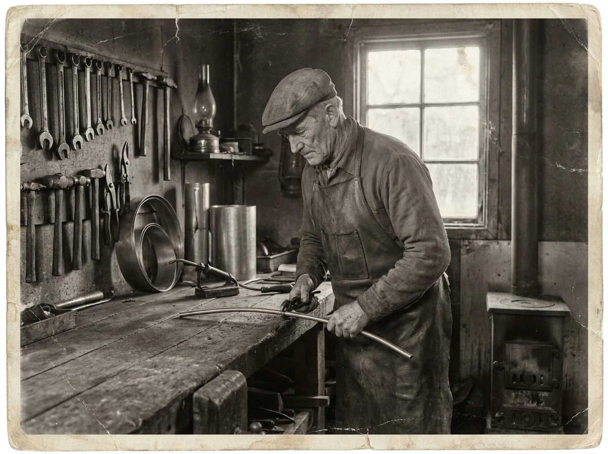
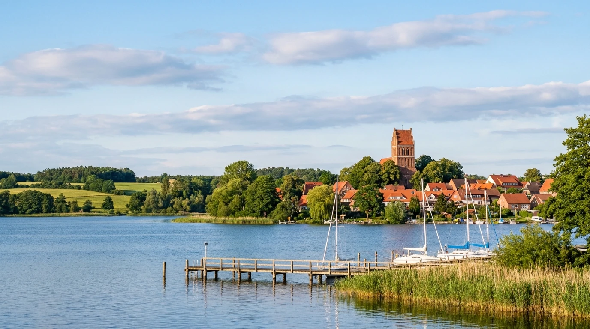

Über uns
Unser Betrieb ist älter als die Bundesrepublik. Gegründet in einem Jahr, in dem in Deutschland vor allem eines gebraucht wurde: Leute, die Dinge wieder zum Laufen bringen. Daran hat sich im Kern nicht viel geändert.
Unsere Geschichte
1945 gegründet – in einer Zeit, in der Klempner vor allem gebraucht wurden, um Dächer zu dichten, Regenrinnen zu flicken und Wasserleitungen wieder in Gang zu bringen. Aus dieser Klempnerei ist über die Jahrzehnte ein Fachbetrieb für Sanitär- und Heizungstechnik geworden.
Was aus der Anfangszeit geblieben ist: Wir arbeiten für Menschen, die wir kennen. Vorschlag, bitte bestätigen oder korrigieren: Viele unserer Kunden sind schon in zweiter oder dritter Generation bei uns – und einige Heizungsanlagen, die wir warten, haben wir selbst eingebaut.
Heute führt Matthias Ahrend den Betrieb seit Jahr ergänzen als Inhaber. Der Name Günter König steht dabei bewusst weiter über der Tür: Er ist in Ratzeburg ein Versprechen, das man nicht gegen einen modernen Firmennamen tauscht.

Zeitleiste
Die belegten Daten stehen fest – die Lücken füllen wir gern mit Ihren Erinnerungen.
Der Betrieb entsteht als Klempnerei – in einer Zeit, in der Material knapp und Improvisation eine Kernkompetenz war.
Mit dem Wohnungsbau der Fünfziger und Sechziger wächst die Arbeit: Bäder werden selbstverständlich, Zentralheizungen ersetzen den Kohleofen. Details und Jahreszahlen ergänzen
Der Betrieb geht in neue Hände – der eingeführte Name bleibt. Wie kam es dazu? Vorher schon im Betrieb gewesen?
Wärmepumpen, Solarthermie, kontrollierte Wohnraumlüftung und Komplettbäder – mit demselben Anspruch wie 1945: Es muss funktionieren, und man muss uns erreichen können.
Wofür wir stehen
Auch wenn es unbequem ist: Wenn eine Reparatur sich nicht mehr lohnt, sagen wir das. Und wenn Sie noch fünf Jahre mit der alten Anlage fahren können, sagen wir das auch – selbst wenn wir dann nichts verkaufen.
Kein Ticketsystem, keine Warteschleife. Sie rufen an und sprechen mit jemandem, der Ihr Haus einordnen kann. Bei uns hat jeder Kunde ein Gesicht.
Handwerk gibt es nur weiter, wenn jemand es lernt. Deshalb bilden wir aus und geben Verantwortung früh ab – auch wenn das anfangs mehr Geduld kostet.
Unser Gebiet
Unser Kerngebiet ist Ratzeburg und der Kreis Herzogtum Lauenburg. Kurze Wege bedeuten, dass wir im Notfall wirklich schnell da sind – und dass wir die Häuser hier kennen: Klinker, Altbauten am See, Siedlungshäuser aus den Sechzigern und Neubaugebiete am Stadtrand.

Kundenstimmen
Nächster Schritt
Ob große Sanierung oder kleine Reparatur: Ein Anruf genügt, und wir schauen uns die Sache an.